1. Qué es la plataforma
La plataforma es el diagrama de contenedores (página 3a) funcionando en un solo equipo con Docker Compose:
22 contenedores, de los cuales 11 son los microservicios en Spring Boot y uno es la SPA en React. No es una maqueta:
cada ventana llama a su servicio por el gateway, los servicios se hablan por Kafka y cada uno tiene su base en
PostgreSQL. El código está en KonradGourmet/ (rama stack-real, guía del código) y lo que hace
cada contenedor, en KonradGourmet/plataforma/LEEME.md.
| Dirección | Qué es |
|---|---|
http://localhost:8080 | La aplicación: Nginx sirve la SPA y pasa /api/** al gateway |
http://localhost:8080/plataforma/ | Los 11 servicios en Eureka y su prefijo en el gateway |
http://localhost:8761 | Eureka: las instancias registradas |
http://localhost:8025 | Mailpit: los correos que envía ms-notificaciones, con sus adjuntos y cabeceras |
Cómo viaja una petición
Además corren Redis (caché de precios, canal de alarmas y límite de tasa), el almacén de objetos S3 (los PDF y las imágenes de los platos), Elasticsearch (los logs de error), Mailpit (el correo) y dos servicios que hacen las veces del Ministerio de Comercio y de la API de redes sociales. Lo que está fuera de la aplicación se explica en la guía de lo externo; cada microservicio, en la guía de los microservicios.
2. Cómo se levanta, se comprueba y se apaga
Solo hace falta Docker. Los comandos se corren desde la carpeta FinalProyecto. Todas las instancias
usan los mismos puertos, así que solo puede estar encendida una a la vez: el nombre de la instancia lo da
COMPOSE_PROJECT_NAME.
Para la demo: la instancia kg-demo
# 1. Dejarla con los datos de la demo (copia los datos de kg-mockups; detiene las dos si están encendidas)
documentos/guias_sustentacion/fuente/restablecer_demo.sh
# 2. Encenderla (unos 4 minutos)
COMPOSE_PROJECT_NAME=kg-demo KonradGourmet/plataforma/levantar.sh --sin-compilar
# 3. Esperar ~75 s más: el script termina cuando el gateway ya enruta, pero los servicios
# tardan un poco en encontrarse entre sí en Eureka (si no, la primera cotización da 503)
# 4. Apagarla al terminar (conserva los datos)
COMPOSE_PROJECT_NAME=kg-demo docker compose -f KonradGourmet/plataforma/docker-compose.yml stopLa demo cambia los datos (crea el pedido, la solicitud, las cotizaciones y la orden). Para repetirla desde el mismo punto, por ejemplo después de un ensayo, se vuelve al paso 1.
Cómo saber que está lista
http://localhost:8080/plataforma/muestra los 11 servicios «Activo».- En el inventario del jefe, la res está en 12,5 kg de 50 (25 %): es el punto de partida de la alarma.
- Mailpit está casi vacío (solo «Promociones sugeridas», que llega al encender).
Las otras instancias del equipo
| Instancia | Para qué |
|---|---|
kg-demo | La demo de la sustentación; se restablece desde kg-mockups |
kg-mockups | Los datos de partida de la demo (COT-018 a COT-022, OC-0012); no se usa en vivo |
kg-limpio | Las pruebas de punta a punta (probar_todo.sh) |
konrad-gourmet | La instancia de trabajo, con datos de pruebas manuales |
3. Los seis roles
Todos con la clave Konrad2026; la pantalla de inicio de sesión tiene un botón por rol que llena el
correo y la clave. El menú de cada rol lo arma ms-identidad (Factory Method, un construirMenu() por rol)
como un árbol de grupos y opciones (Composite) y viaja dentro del JWT. La sesión dura 10 horas y, si no se marca
«Recordarme», vive en la pestaña: cada pestaña puede tener un rol distinto.
| Rol | Usuario | Su menú |
|---|---|---|
| Mesero | isabella.torres@konradgourmet.com | Inicio (V02), Pedidos del turno, Nuevo pedido (V03) |
| Jefe de cocina | carlos.mendoza@konradgourmet.com | Inicio (V05), Platos (V06 y editar), Inventario (V07), Solicitudes (V08 y V10), Promociones |
| Auxiliar de compras | isabella.castro@konradgourmet.com | Inicio (V11), Todas las solicitudes (V12), Generar cotización (V13), Cotizaciones enviadas (V15), Proveedores |
| Directora de compras | laura.gomez@konradgourmet.com | Inicio (V16), Todas (V17), Pendientes de validar (V18), Opcionadas (V20), Órdenes de compra (V23) |
| Director comercial | andres.rojas@konradgourmet.com | Tablero BAM (entra directo a él) |
| Administradora | paula.herrera@konradgourmet.com | Inicio, Parámetros y tema, Auditoría, Logs de errores, Usuarios, Destinatarios |
Todos tienen además «Mi perfil» y «Cerrar sesión». El mesero y el jefe de cocina son de la Sucursal Centro.
4. Las 33 ventanas
La SPA tiene 33 ventanas: las 23 del prototipo (V01 a V23) y otras diez para funciones que el prototipo no dibujaba. Cada rol ve solo las suyas: el menú lateral llega dentro del JWT, armado por ms-identidad. Las imágenes son de la aplicación con los datos de la demo; al tocarlas se abren en tamaño real. Las de V03, V04, V08, V09, V13, V14, V18, V19, V21 y V22 aparecen solo después de una acción, así que son las del recorrido de la demo.
Todos los roles
V01 · Inicio de sesión

Correo y clave, con un botón por rol que llena los datos de demostración. Al entrar, la SPA recibe un JWT con el menú del rol y aplica la imagen corporativa.
- Servicio
- ms-identidad
- Rutas
POST /api/auth/token- Eventos
- auditoria.evento (inicio de sesión)
- Se ve
- MicroserviciosOAuth 2.0 / JWTFactory MethodComposite
Mesero (Isabella Torres)
V02 · Inicio del mesero
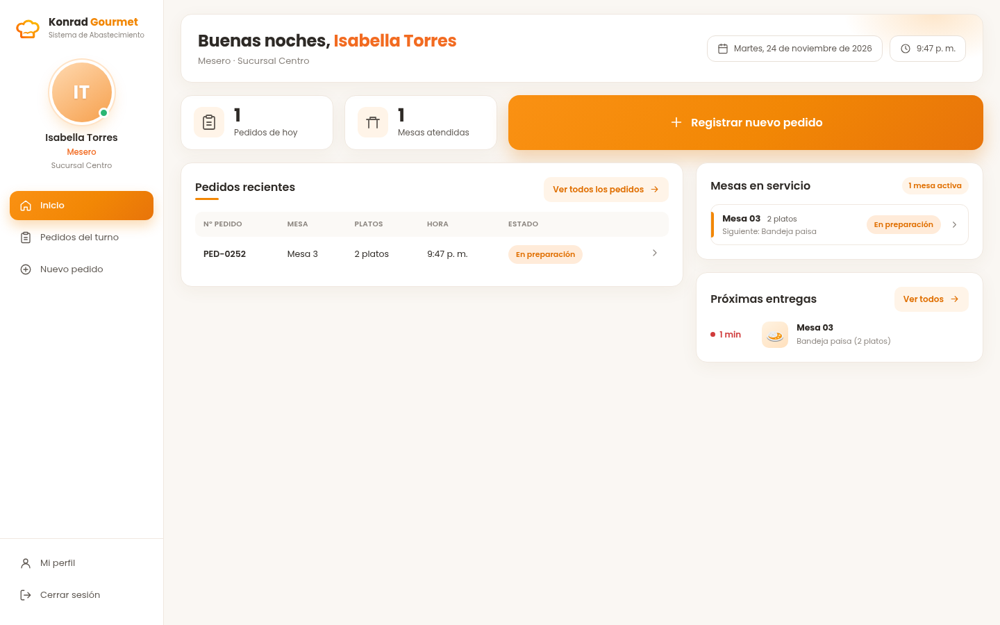
Resumen del turno: los pedidos que registró hoy y un acceso a «Nuevo pedido».
- Servicio
- ms-pedidos
- Rutas
GET /api/pedidos?turno=actual- Eventos
- —
- Se ve
- MicroserviciosREST
V03 · Nuevo pedido

Catálogo de platos con su foto si la tiene (si no, su ícono) y precio, cantidades, mesa y total. El catálogo es una copia local que ms-pedidos arma con los eventos de ms-menu.
- Servicio
- ms-pedidos (la foto, de ms-menu)
- Rutas
GET /api/pedidos/catalogo, GET /api/pedidos/mesas, POST /api/pedidos- Eventos
- consume menu.actualizado
- Se ve
- MicroserviciosEventosHexagonal
V04 · Pedido registrado
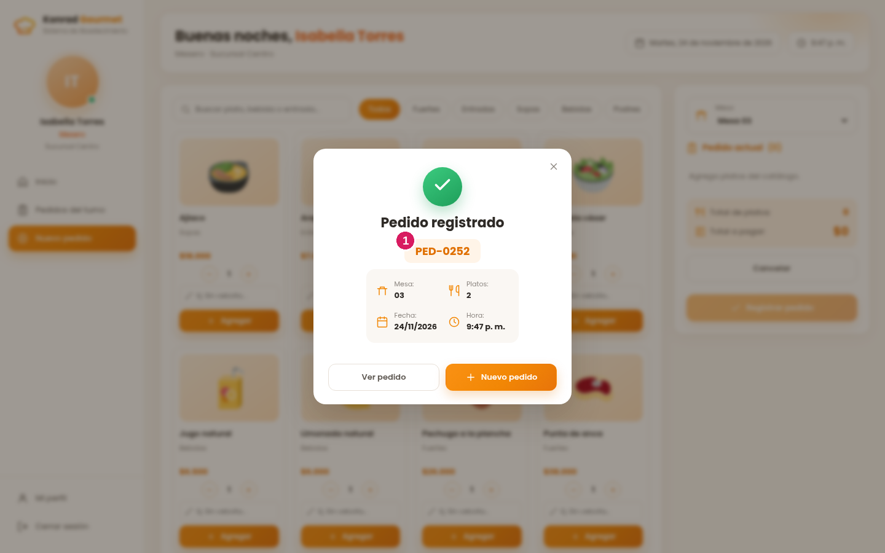
Confirmación con el número del pedido (PED-0252). La respuesta es inmediata; el descuento de inventario y los indicadores llegan después por evento.
- Servicio
- ms-pedidos
- Rutas
201 Created- Eventos
- publica pedido.registrado → ms-inventario y ms-analitica
- Se ve
- Eventos
Jefe de cocina (Carlos Mendoza)
V05 · Inicio del jefe
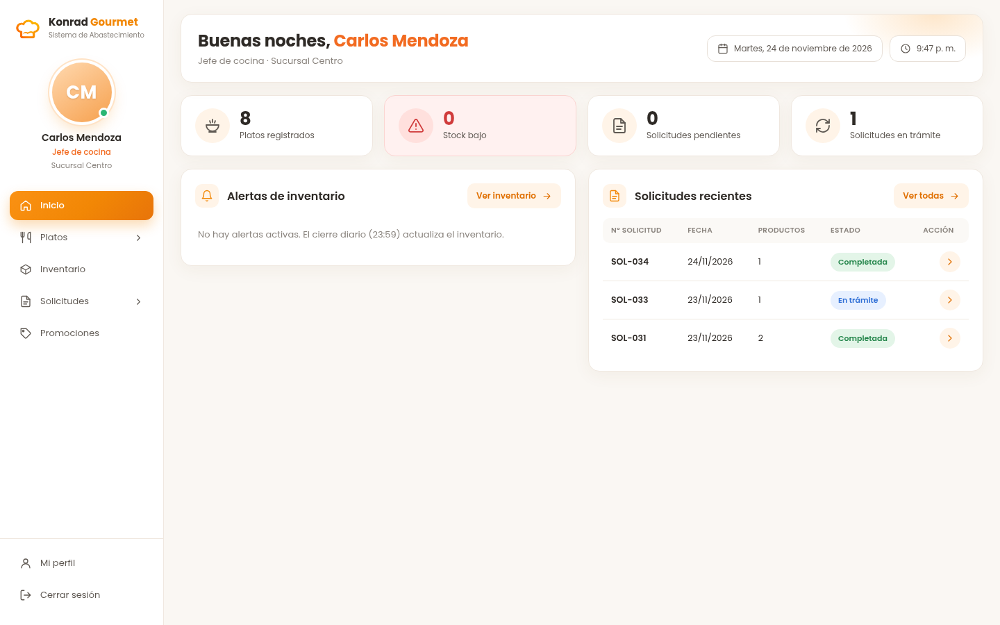
Alertas de inventario, la alarma de stock bajo en vivo (arriba a la derecha, con «Solicitar») y las solicitudes recientes.
- Servicio
- ms-inventario y ms-notificaciones
- Rutas
GET /api/inventario/alertas; WebSocket /api/notificaciones/alarmas- Eventos
- inventario.stock-bajo → ms-notificaciones → Redis → WebSocket
- Se ve
- EventosFactory MethodPD-01: Redis pub/sub
V06 · Nuevo plato

Nombre, categoría, precio de venta, imagen y receta (producto, cantidad y unidad). La imagen va al almacén de objetos.
- Servicio
- ms-menu
- Rutas
POST /api/platos, PUT /api/platos/{id}/imagen- Eventos
- publica menu.actualizado → ms-pedidos, ms-inventario y ms-analitica
- Se ve
- HexagonalEventos
V07 · Inventario
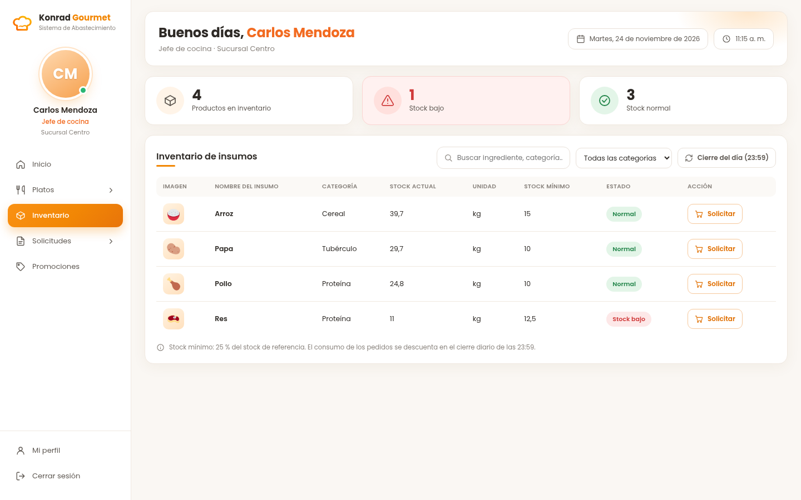
Existencias de la sucursal frente al stock de referencia y el umbral del 25 %. «Cierre del día (23:59)» adelanta la tarea programada que descuenta el consumo y genera las alertas.
- Servicio
- ms-inventario
- Rutas
GET /api/inventario/insumos, POST /api/inventario/cierre- Eventos
- consume pedido.registrado y menu.actualizado; publica inventario.stock-bajo
- Se ve
- EventosTarea programada con ShedLock
V08 · Nueva solicitud de alimentos
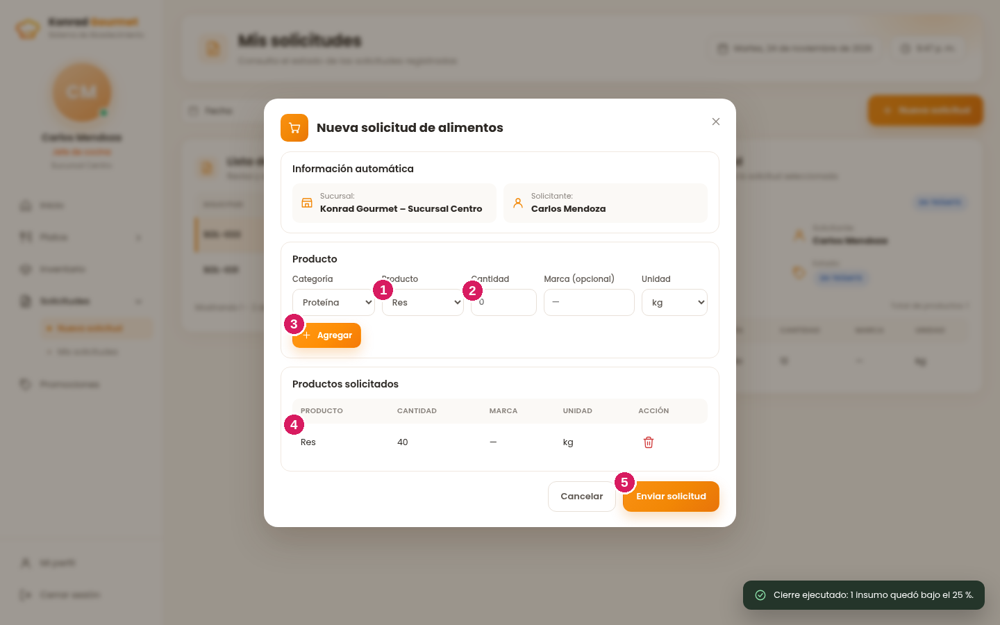
Categoría, producto, cantidad, unidad y marca. Desde la alarma o una alerta, «Solicitar» la abre con el producto ya escogido.
- Servicio
- ms-solicitudes
- Rutas
POST /api/solicitudes; GET /api/platos/productos?categoria=…- Eventos
- —
- Se ve
- Hexagonal
V09 · Solicitud registrada

Confirmación con el número (SOL-034) en estado PENDIENTE.
- Servicio
- ms-solicitudes
- Rutas
201 Created- Eventos
- publica solicitud.registrada → ms-notificaciones, ms-analitica y ms-inventario (alerta atendida)
- Se ve
- Eventos
V10 · Mis solicitudes
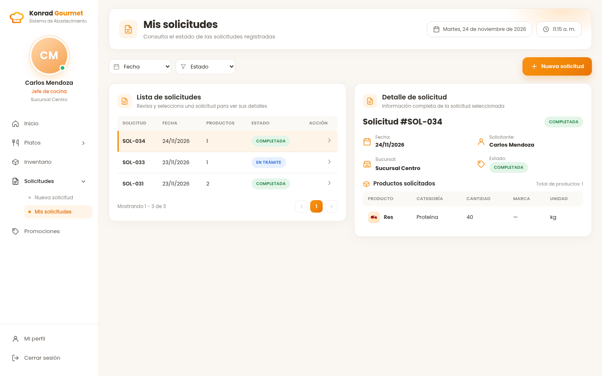
Las solicitudes del jefe con su estado. PENDIENTE pasa a EN TRÁMITE y luego a COMPLETADA sin que el jefe haga nada: lo cambian los eventos.
- Servicio
- ms-solicitudes
- Rutas
GET /api/solicitudes?solicitante=yo- Eventos
- consume cotizacion.enviada y orden.generada; publica solicitud.en-tramite
- Se ve
- Eventos
Auxiliar de compras (Isabella Castro)
V11 · Inicio del auxiliar

Solicitudes pendientes de todas las sucursales y accesos a cotizaciones y proveedores.
- Servicio
- ms-solicitudes
- Rutas
GET /api/solicitudes?estado=PENDIENTE- Eventos
- —
- Se ve
- Microservicios
V12 · Solicitudes, con «Generar cotización»

Filtros de HU-07 (fechas, producto, marca y estado) y el detalle de la solicitud con quién la pidió y el botón para cotizarla.
- Servicio
- ms-solicitudes
- Rutas
GET /api/solicitudes, GET /api/solicitudes/{id}- Eventos
- —
- Se ve
- MicroserviciosREST
V13 · Generar solicitud de cotización

Una o varias solicitudes, los productos a cotizar, el proveedor y la fecha límite. Un clic pide el precio del Ministerio, guarda el PDF y lo envía por correo.
- Servicio
- ms-cotizaciones (precio de ms-integracion)
- Rutas
POST /api/cotizaciones; GET /api/proveedores; GET /interno/precios/{productoId}- Eventos
- publica cotizacion.enviada → ms-notificaciones y ms-solicitudes
- Se ve
- FacadeAdapterProxySOA (SOAP)
V14 · Cotización enviada

Número, proveedor y productos, con «PDF generado» y «Correo enviado» (consulta la traza de ms-notificaciones) y «Ver PDF».
- Servicio
- ms-cotizaciones y ms-notificaciones
- Rutas
GET /api/cotizaciones/{id}/pdf; GET /api/notificaciones/envios?correlacion=…- Eventos
- —
- Se ve
- Decorator (correo certificado)Almacén de objetos
V15 · Cotizaciones enviadas

Las cotizaciones del auxiliar con su estado y su detalle.
- Servicio
- ms-cotizaciones
- Rutas
GET /api/cotizaciones- Eventos
- consume orden.generada (CON ORDEN)
- Se ve
- Microservicios
Directora de compras (Laura Gómez)
V16 · Inicio de la directora
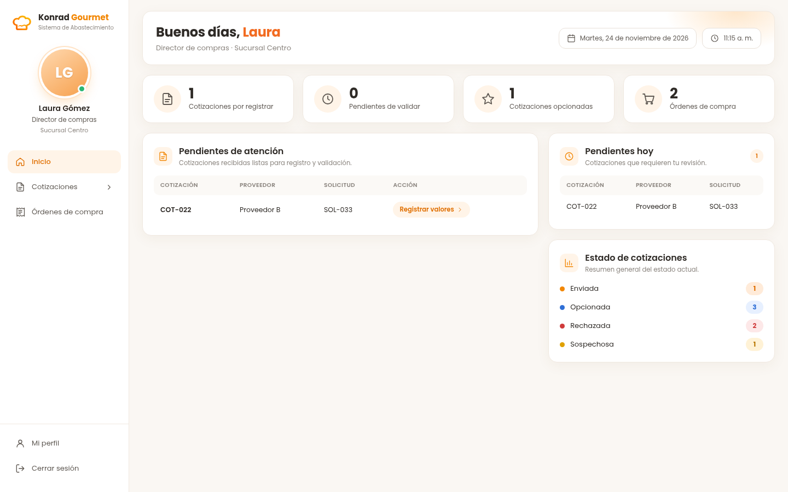
Cotizaciones pendientes de atención y accesos a validar, opcionadas y órdenes.
- Servicio
- ms-cotizaciones
- Rutas
GET /api/cotizaciones/pendientes- Eventos
- —
- Se ve
- Microservicios
V17 · Todas las cotizaciones

Todas las cotizaciones, con filtros y el detalle de cada una (estado y diferencia).
- Servicio
- ms-cotizaciones
- Rutas
GET /api/cotizaciones- Eventos
- —
- Se ve
- Microservicios
V18 · Registrar valores de cotización
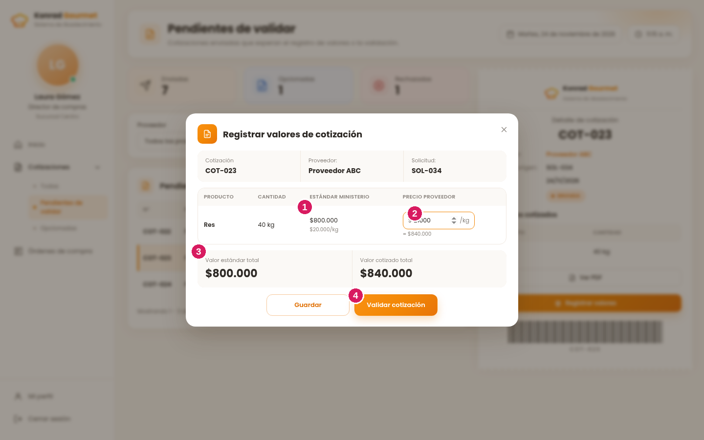
El precio por unidad que respondió el proveedor junto al estándar del Ministerio; el total y la diferencia se recalculan al escribir.
- Servicio
- ms-cotizaciones
- Rutas
PUT /api/cotizaciones/{id}/valores- Eventos
- —
- Se ve
- Hexagonal
V19 · Validación completada

El estado que calculó la cadena de reglas: más de 25 % por encima, RECHAZADA; más de 50 % por debajo, SOSPECHOSA; el resto, OPCIONADA.
- Servicio
- ms-cotizaciones
- Rutas
POST /api/cotizaciones/{id}/validacion- Eventos
- publica cotizacion.validada → ms-analitica
- Se ve
- Chain of ResponsibilityHexagonal
V20 · Cotizaciones opcionadas

Compara las opcionadas de una solicitud, la de menor diferencia primero, y permite seleccionar una para compra.
- Servicio
- ms-cotizaciones
- Rutas
GET /api/cotizaciones?estado=OPCIONADA, GET /api/cotizaciones/{id}- Eventos
- —
- Se ve
- Microservicios
V21 · Generar orden de compra

Datos de la cotización, productos y total, con «Confirmar orden de compra».
- Servicio
- ms-ordenes (lee la cotización de ms-cotizaciones)
- Rutas
POST /api/ordenes-compra (y GET /api/cotizaciones/{id}, síncrono)- Eventos
- publica orden.generada
- Se ve
- MicroserviciosREST síncrono
V22 · Orden generada

Confirmación con el número de la orden (OC-0013) y su total.
- Servicio
- ms-ordenes
- Rutas
201 Created- Eventos
- orden.generada → ms-solicitudes, ms-cotizaciones, ms-notificaciones y ms-analitica
- Se ve
- Eventos
V23 · Órdenes de compra
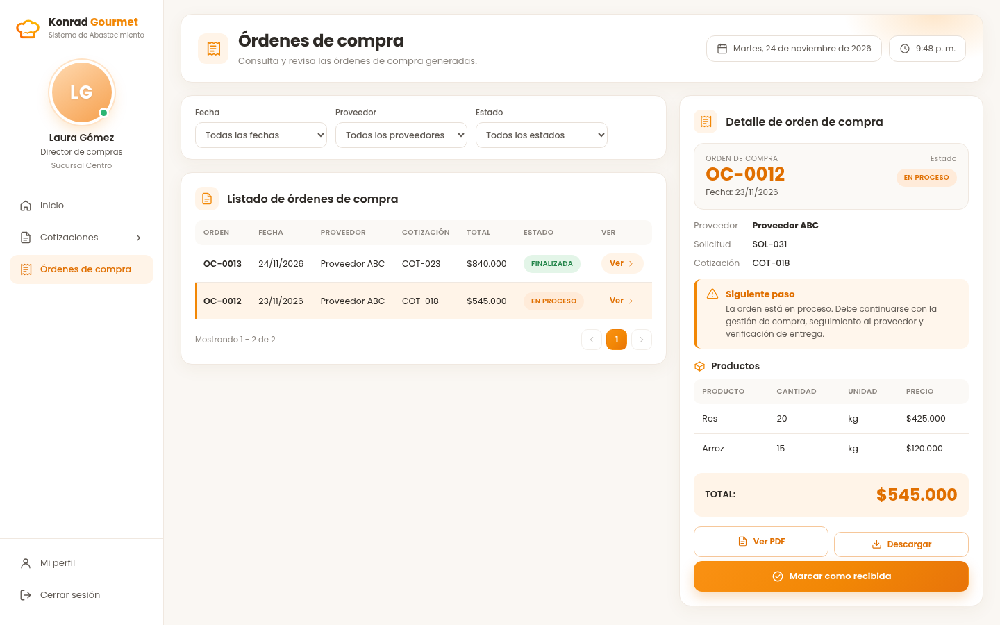
Seguimiento de las órdenes: «Ver PDF», «Descargar» y «Marcar como recibida» (de EN PROCESO a FINALIZADA).
- Servicio
- ms-ordenes
- Rutas
GET /api/ordenes-compra, GET …/{id}/pdf, PATCH …/{id}/finalizar- Eventos
- —
- Se ve
- MicroserviciosAlmacén de objetos
Las otras diez ventanas
Platos: editar, desactivar y activar (jefe de cocina)

La lista de platos de la sucursal (con los desactivados) y el detalle con «Editar plato» y «Desactivar» o «Activar». Un plato desactivado sale del catálogo del mesero.
- Servicio
- ms-menu
- Rutas
GET /api/platos, PUT /api/platos/{id}, PATCH …/{id}/desactivar y …/{id}/reactivar- Eventos
- publica menu.actualizado
- Se ve
- HexagonalEventos
Promociones sugeridas (jefe de cocina)

Sugerencias del análisis semanal que cruza las tendencias de las redes con los platos más pedidos; el jefe las acepta o las descarta.
- Servicio
- ms-analitica
- Rutas
GET /api/bam/promociones, PATCH …/{id}/aceptar y …/{id}/descartar- Eventos
- TendenciasJob publica tendencia.detectada → correo a los jefes
- Se ve
- EventosTarea programada
Proveedores (auxiliar de compras)

Lista de proveedores y formulario para registrar, editar o inactivar uno (NIT único, correo válido).
- Servicio
- ms-cotizaciones
- Rutas
GET, POST y PUT /api/proveedores; PATCH /api/proveedores/{id}/inactivar- Eventos
- —
- Se ve
- Hexagonal
Reenviar una cotización pendiente de precio (auxiliar de compras)

Si el Ministerio no responde, la cotización se guarda PENDIENTE DE PRECIO sin enviarse; cuando vuelve, «Reenviar» la completa y la envía.
- Servicio
- ms-cotizaciones
- Rutas
POST /api/cotizaciones/{id}/reenvio- Eventos
- publica cotizacion.enviada al reenviarla
- Se ve
- ResilienciaSOA
Tablero BAM (director comercial)
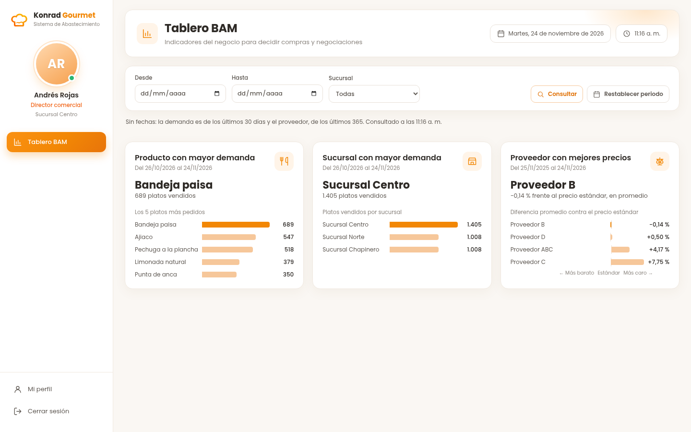
Producto y sucursal con mayor demanda y proveedor con mejores precios, con su ranking; filtros de fechas y sucursal.
- Servicio
- ms-analitica
- Rutas
GET /api/bam/kpis?desde=…&hasta=…&sucursalId=…- Eventos
- consume pedido.registrado, cotizacion.validada, inventario.stock-bajo, solicitud.registrada, orden.generada y menu.actualizado
- Se ve
- StrategyEventosAlmacén de hechos propio
Parámetros y tema (administrador)

Imagen corporativa (nombre, color y logo) y parámetros generales; la SPA aplica el tema al iniciar sesión, sin redesplegar.
- Servicio
- ms-administracion
- Rutas
GET y PUT /api/admin/parametros; GET /api/admin/parametros/tema- Eventos
- —
- Se ve
- Singleton
Auditoría (administrador)

Quién hizo cada acción y cuándo, en un rango de fechas, lo más reciente primero.
- Servicio
- ms-administracion
- Rutas
GET /api/admin/auditoria?desde=…&hasta=…- Eventos
- consume auditoria.evento de los otros diez servicios
- Se ve
- EventosOutbox
Logs de errores (administrador)

Los errores que registran los servicios, filtrables por servicio.
- Servicio
- ms-administracion
- Rutas
GET /api/admin/logs?servicio=…- Eventos
- — (los lee de Elasticsearch)
- Se ve
- ELK
Usuarios (administrador)

Alta de usuarios con su rol y sucursal (correo único y regla de contraseña).
- Servicio
- ms-identidad
- Rutas
POST /api/usuarios- Eventos
- auditoria.evento
- Se ve
- Microservicios
Destinatarios de alertas (administrador)
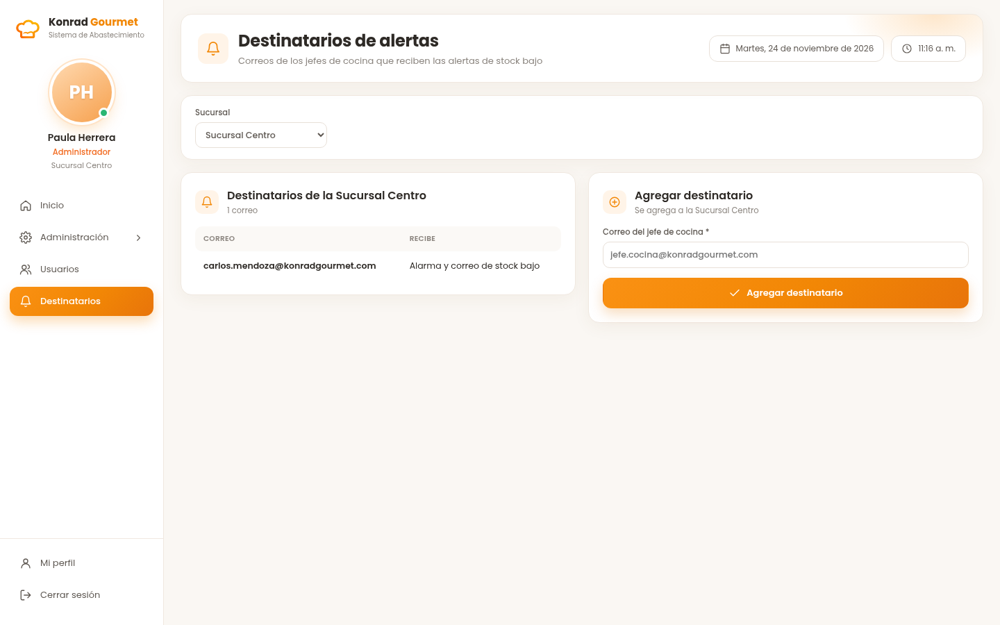
Los correos que reciben las alertas de stock bajo de cada sucursal.
- Servicio
- ms-notificaciones
- Rutas
GET y POST /api/notificaciones/destinatarios- Eventos
- —
- Se ve
- Microservicios
Páginas de apoyo que no se cuentan entre las 33
«Inicio» del administrador (accesos a sus cinco ventanas), «Pedidos del turno» del mesero (la lista completa del
turno, /pedidos) y «Mi perfil» (los datos del usuario, en todos los roles). Una dirección que no está en el menú
del rol lleva a su inicio.
Responsive: las mismas ventanas a 390 px
Todas las ventanas caben en un teléfono sin desplazarse a lo ancho; el menú lateral pasa a un botón. Si preguntan, se muestra con las herramientas del navegador (modo de dispositivo) o reduciendo la ventana.
5. La demo en vivo, paso a paso
Una sola historia que cruza los 11 servicios y los 6 roles, con los datos de la demo (la instancia
kg-demo, sección 2). Los números son los que salen al hacerla en ese orden sobre la instancia
restablecida: PED-0252, la alarma de la res, SOL-034, COT-023 y COT-024,
OC-0013. Si se repite un paso, los números siguientes cambian y no pasa nada. Duración: unos 12 a 13 minutos; si
hay menos tiempo, los pasos 7 y 9 se pueden acortar a una imagen cada uno.
Las imágenes tienen círculos numerados en lo que se pulsa o se señala; la tabla de debajo dice qué es cada uno (tocar un número lleva a su fila y al revés).
🎤 Para abrir la demo
«Ahora vamos a ver la plataforma funcionando. Es la arquitectura del diagrama de contenedores corriendo en este equipo: once microservicios, Kafka, las bases de datos y la SPA. Vamos a seguir una compra completa, desde un pedido en la mesa hasta la orden de compra, pasando por los seis roles.»
Paso 1 · El mesero registra un pedido
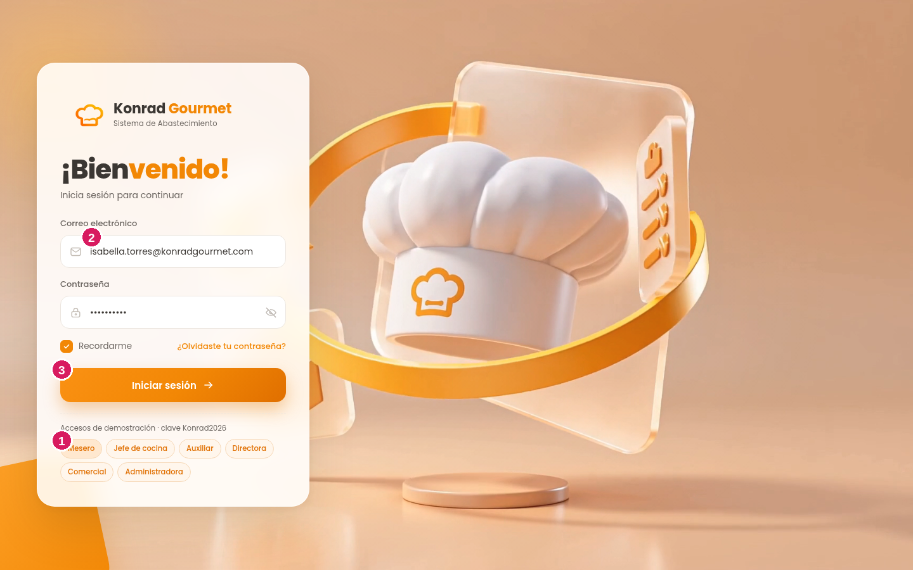
| N.º | Qué hacer o señalar |
|---|---|
| «Mesero» en los accesos de demostración: llena el correo y la clave. | |
| El correo del mesero (la clave es Konrad2026). | |
| «Iniciar sesión». La SPA recibe el JWT y muestra el menú del mesero. |
| N.º | Qué hacer o señalar |
|---|---|
| «Agregar» en la Bandeja paisa. | |
| «Agregar» en la Limonada natural. | |
| Mesa 3. | |
| El total: $38.000. | |
| «Registrar pedido». |
| N.º | Qué hacer o señalar |
|---|---|
| El número del pedido: PED-0252. |
Debe verse: V04 con PED-0252 por $38.000.
Qué arquitectura se ve: MicroserviciosOAuth 2.0 / JWTComposite (menú)REST síncronopedido.registrado
🎤 Qué decir
«Empezamos como mesero. El inicio de sesión lo atiende ms-identidad: devuelve un token JWT que trae el rol y el menú, por eso cada rol ve un menú distinto sin que la SPA sepa de roles.»
«Registramos una bandeja paisa y una limonada en la mesa 3. ms-pedidos responde de inmediato con PED-0252: el mesero no espera nada más. Al mismo tiempo publica el evento pedido.registrado, que escuchan inventario, para el consumo del día, y analítica, para los indicadores.»
Paso 2 · Cierre del día y alarma de stock bajo
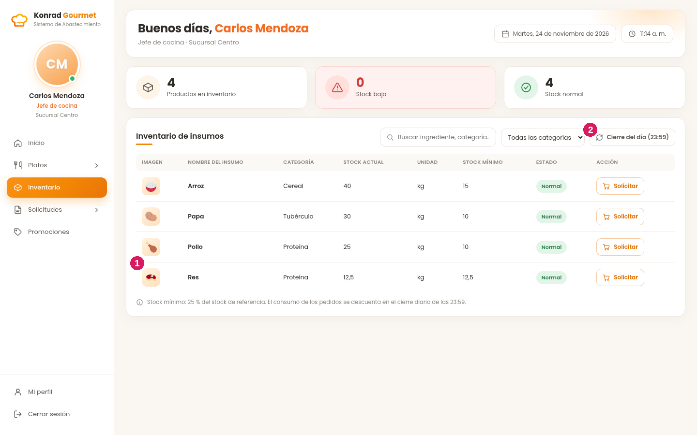
| N.º | Qué hacer o señalar |
|---|---|
| La res: 12,5 kg, justo en el mínimo (12,5 kg, el 25 % de 50 kg); estado «Normal». | |
| «Cierre del día (23:59)». |
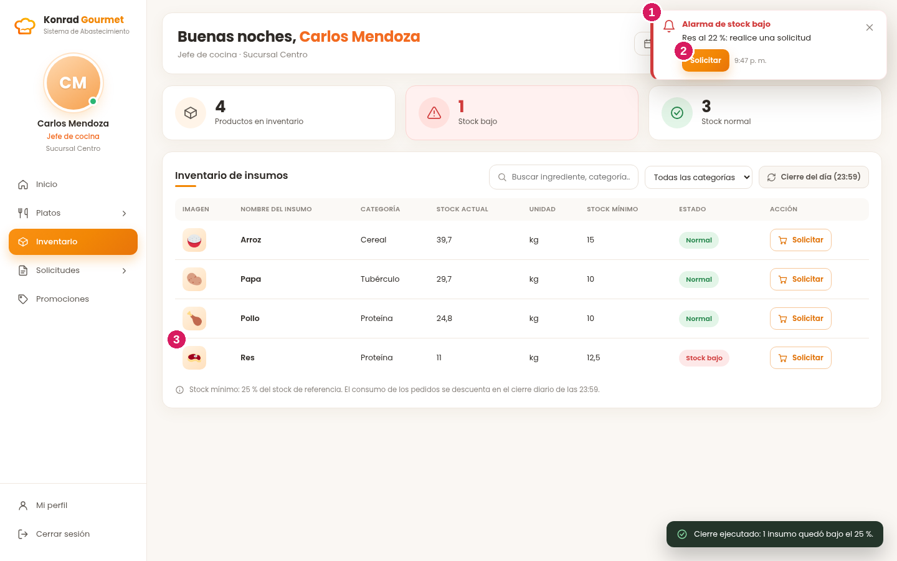
| N.º | Qué hacer o señalar |
|---|---|
| La alarma llega sola, sin recargar: «Res al 22 %: realice una solicitud». | |
| «Solicitar» (paso 3). | |
| La res ya descontada: 11 kg, «Stock bajo». |
Debe verse: la alarma roja «Res al 22 %: realice una solicitud» arriba a la derecha y, en Mailpit, el correo «Stock bajo: Res».
Si preguntan por qué la res baja 12,5 → 11 kg si la bandeja paisa lleva 0,5 kg: el cierre descuenta todo lo vendido desde el último cierre, que es PED-0251 de los datos de partida (2 bandejas paisas y un ajiaco, que no lleva res) y PED-0252 (1 bandeja paisa): 3 × 0,5 kg = 1,5 kg.
Qué arquitectura se ve: Eventosinventario.stock-bajoTarea programada con ShedLockPD-01: Redis pub/sub y WebSocketFactory Method
🎤 Qué decir
«Ahora el jefe de cocina. Cada noche, a las 23:59, una tarea programada descuenta lo que se vendió en el día; con ShedLock la ejecuta una sola réplica. Aquí la adelantamos con este botón.»
«La res estaba en el 25 % y con lo vendido queda por debajo. ms-inventario publica inventario.stock-bajo; ms-notificaciones lo recibe, lo publica en Redis y la réplica que tiene abierta la sesión del jefe le entrega la alarma por WebSocket. Por eso aparece sin recargar. Además le llega un correo.»
Paso 3 · El jefe pide la res
| N.º | Qué hacer o señalar |
|---|---|
| El producto ya viene escogido: Res. | |
| La cantidad: 40 (kg). | |
| «Agregar». | |
| La línea de la solicitud. | |
| «Enviar solicitud». |
| N.º | Qué hacer o señalar |
|---|---|
| El número: SOL-034. | |
| Estado PENDIENTE. |
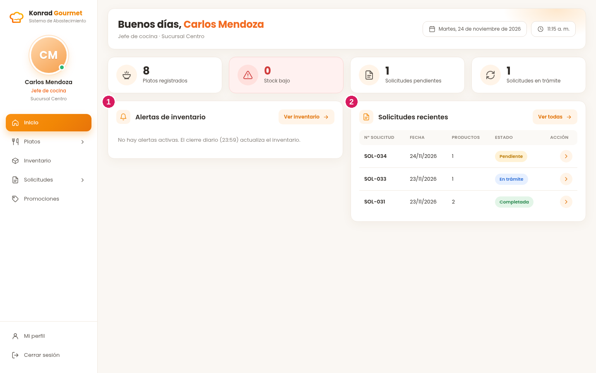
| N.º | Qué hacer o señalar |
|---|---|
| Las alertas: la de la res ya no está (quedó atendida). | |
| SOL-034 en «Solicitudes recientes». |
Debe verse: SOL-034 PENDIENTE y, al volver al inicio, la alerta de la res atendida.
Qué arquitectura se ve: Hexagonalsolicitud.registradaConsistencia eventual
🎤 Qué decir
«Desde la alarma, “Solicitar” abre la solicitud con la res ya escogida. Pedimos 40 kilos y ms-solicitudes responde SOL-034, PENDIENTE.»
«La validación del formulario vive en el dominio, que es Java puro: es la arquitectura hexagonal. Y el evento solicitud.registrada lo escuchan tres servicios: notificaciones manda la confirmación, analítica la cuenta e inventario marca la alerta como atendida. Ninguno de ellos llamó a otro.»
Paso 4 · El auxiliar cotiza con el precio del Ministerio
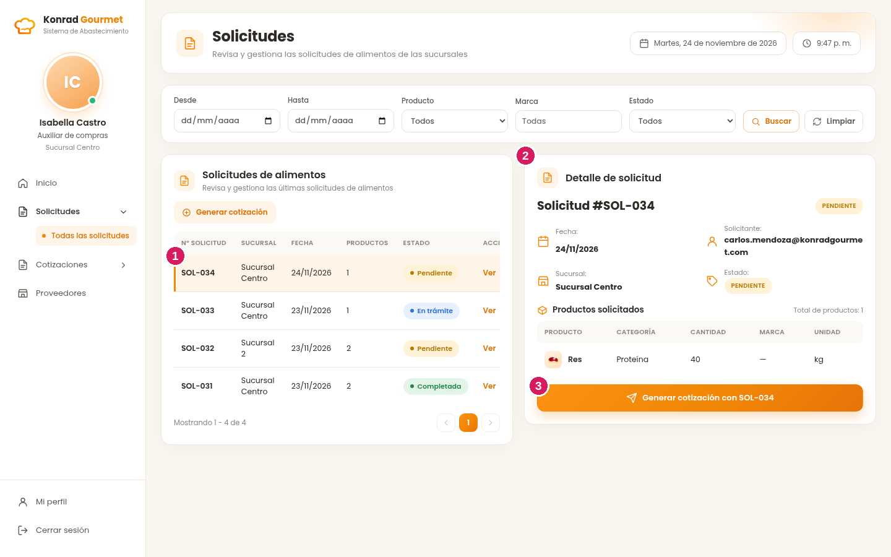
| N.º | Qué hacer o señalar |
|---|---|
| SOL-034 en la lista de solicitudes. | |
| El detalle: quién la pidió, la res y la cantidad. | |
| «Generar cotización con SOL-034». |
| N.º | Qué hacer o señalar |
|---|---|
| SOL-034 viene marcada (se pueden sumar varias solicitudes). | |
| La res, incluida en la cotización. | |
| El proveedor: Proveedor ABC. | |
| «GENERAR Y ENVIAR COTIZACIÓN». |
| N.º | Qué hacer o señalar |
|---|---|
| El número: COT-023. | |
| PDF generado (guardado en el almacén de objetos). | |
| Correo enviado: la marca aparece cuando ms-notificaciones confirma el envío. | |
| «Ver PDF». |
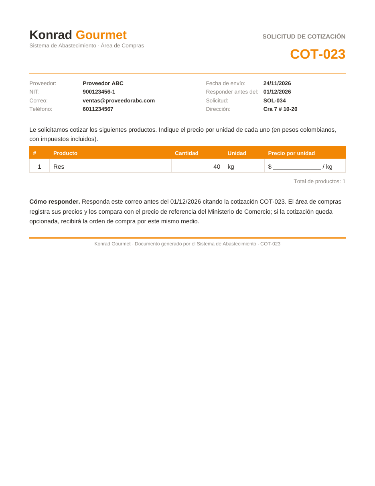
Se repite con el Proveedor C (COT-024): «Cerrar», otra vez «Generar cotización con SOL-034» y otro proveedor. Esta segunda vez el precio de la res ya no se pide al Ministerio: sale de la caché de Redis.
| N.º | Qué hacer o señalar |
|---|---|
| SOL-034 EN TRÁMITE (en la pestaña del jefe). |
Debe verse: COT-023 y COT-024 ENVIADAS con «PDF generado» y «Correo enviado», y en la pestaña del jefe SOL-034 EN TRÁMITE.
Qué arquitectura se ve: FacadeSOA: SOAP con el MinisterioAdapterProxy (caché en Redis)Almacén de objetoscotizacion.enviadasolicitud.en-tramite
🎤 Qué decir
«La auxiliar de compras ve la solicitud y genera la cotización. Este botón es una fachada: un solo clic coordina el precio de referencia, el PDF, el guardado y el evento.»
«El precio estándar lo da el Ministerio de Comercio por SOAP. Solo ms-integracion habla SOAP: el adaptador traduce el servicio web a un puerto del dominio y un proxy guarda el precio en Redis, así la segunda cotización ya no llama al Ministerio.»
«ms-cotizaciones publica cotizacion.enviada: notificaciones envía el PDF al proveedor por correo certificado y solicitudes pasa la solicitud del jefe a EN TRÁMITE. Si cambiamos a la pestaña del jefe, ya lo ve.»
Paso 5 · La directora registra los valores y valida
| N.º | Qué hacer o señalar |
|---|---|
| El estándar del Ministerio: $20.000 por kilo. | |
| El precio que respondió el Proveedor ABC: $21.000 por kilo. | |
| Los totales: estándar $800.000 y proveedor $840.000. | |
| «Validar cotización». |
| N.º | Qué hacer o señalar |
|---|---|
| Estándar y valor del proveedor. | |
| La diferencia: +5,00 %. | |
| Resultado: OPCIONADA. |
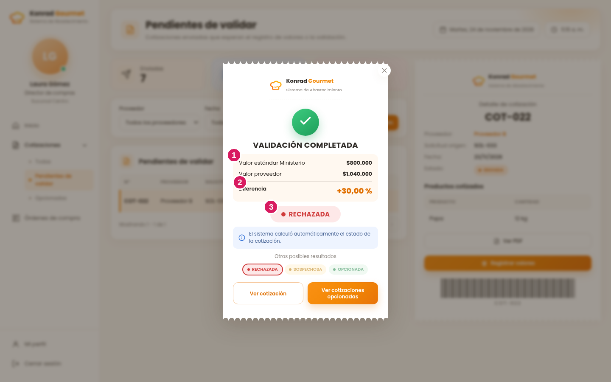
| N.º | Qué hacer o señalar |
|---|---|
| Estándar y valor del proveedor. | |
| La diferencia: +30,00 %. | |
| Resultado: RECHAZADA. |
Debe verse: COT-023 OPCIONADA (+5,00 %) y COT-024 RECHAZADA (+30,00 %).
Ruta: «Cotizaciones» → «Pendientes de validar», la cotización, «Registrar valores». Se escribe $21.000 para COT-023 y $26.000 para COT-024.
Qué arquitectura se ve: HexagonalChain of Responsibilitycotizacion.validada
🎤 Qué decir
«El proveedor responde por correo, fuera del sistema; la directora registra su precio. La validación es una regla de negocio pura: más de 25 % por encima del Ministerio, rechazada; más de 50 % por debajo, sospechosa; el resto, opcionada.»
«Está hecha como cadena de responsabilidad: cada regla es una clase y la cadena se arma en un solo lugar. El Proveedor ABC queda +5,00 %: opcionada. El Proveedor C, +30,00 %: rechazada. Cada validación publica cotizacion.validada para el indicador de proveedores.»
Paso 6 · La orden de compra
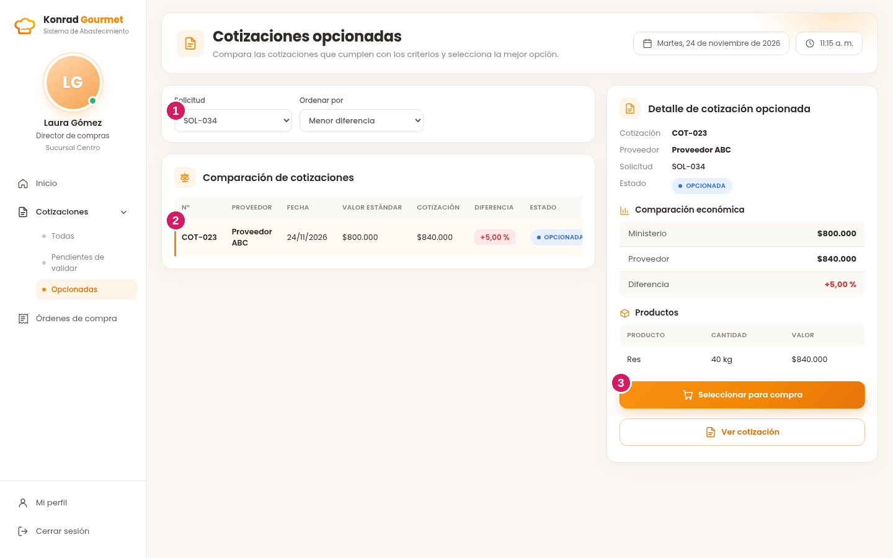
| N.º | Qué hacer o señalar |
|---|---|
| La solicitud: SOL-034. | |
| COT-023, la única opcionada de SOL-034. | |
| «Seleccionar para compra». |
| N.º | Qué hacer o señalar |
|---|---|
| La solicitud de origen: SOL-034. | |
| El total: $840.000. | |
| «Confirmar orden de compra». |
| N.º | Qué hacer o señalar |
|---|---|
| El número de la orden: OC-0013. | |
| «VER ORDEN». |
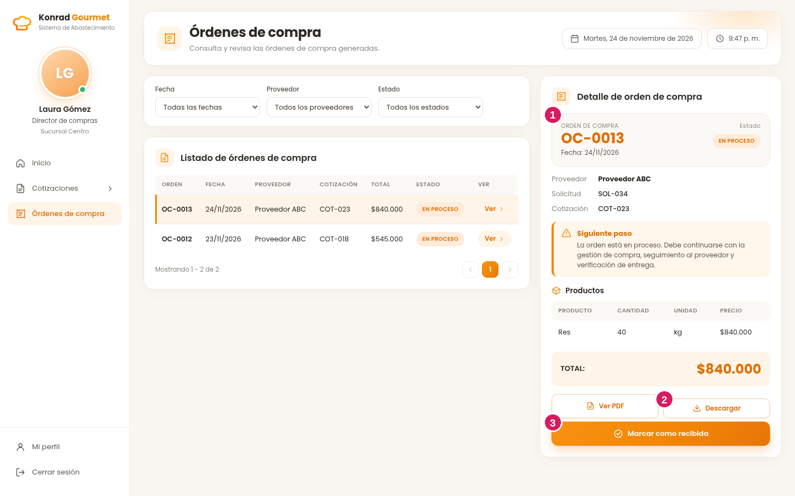
| N.º | Qué hacer o señalar |
|---|---|
| OC-0013 EN PROCESO. | |
| «Descargar» (o «Ver PDF»). | |
| «Marcar como recibida» (opcional). |
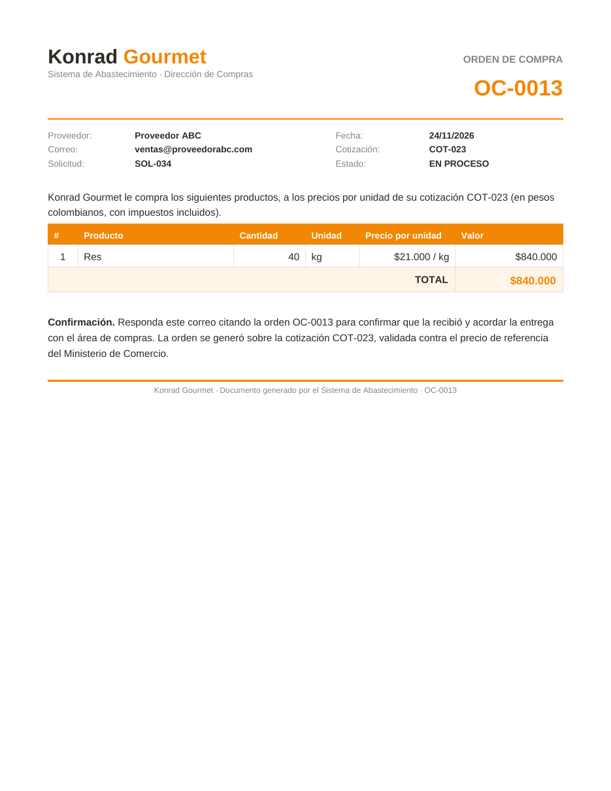
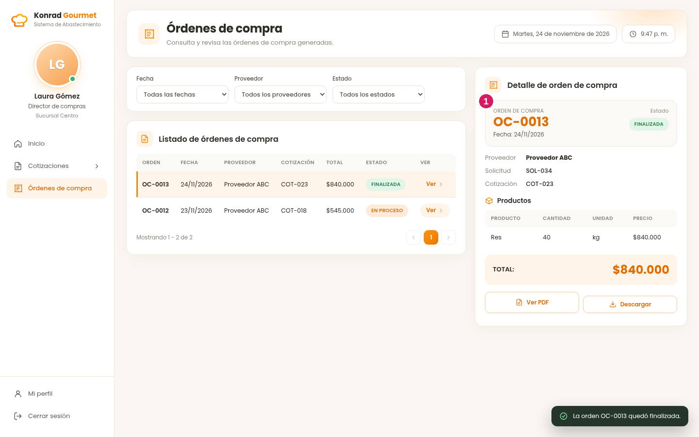
| N.º | Qué hacer o señalar |
|---|---|
| OC-0013 FINALIZADA, después de «Confirmar recepción». |
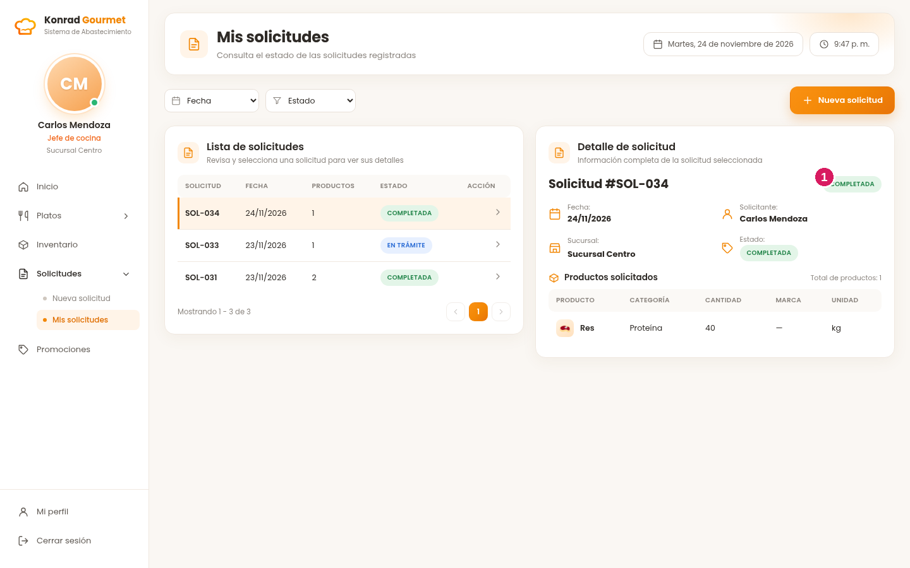
| N.º | Qué hacer o señalar |
|---|---|
| SOL-034 COMPLETADA (en la pestaña del jefe). |
Debe verse: OC-0013 por $840.000, su PDF y, en la pestaña del jefe, SOL-034 COMPLETADA.
Qué arquitectura se ve: MicroserviciosREST síncrono entre serviciosorden.generadaAlmacén de objetos
🎤 Qué decir
«En opcionadas la directora compara las cotizaciones de la solicitud y escoge una. Al confirmar, ms-ordenes consulta la cotización a ms-cotizaciones de forma síncrona, porque la directora espera el número: OC-0013.»
«Todo lo demás es asíncrono con orden.generada: la cotización pasa a CON ORDEN, la solicitud del jefe a COMPLETADA, notificaciones envía el PDF de la orden al proveedor y analítica actualiza los indicadores. Cuando llega el pedido, la directora la marca como recibida y queda FINALIZADA.»
Paso 7 · Los correos de la historia
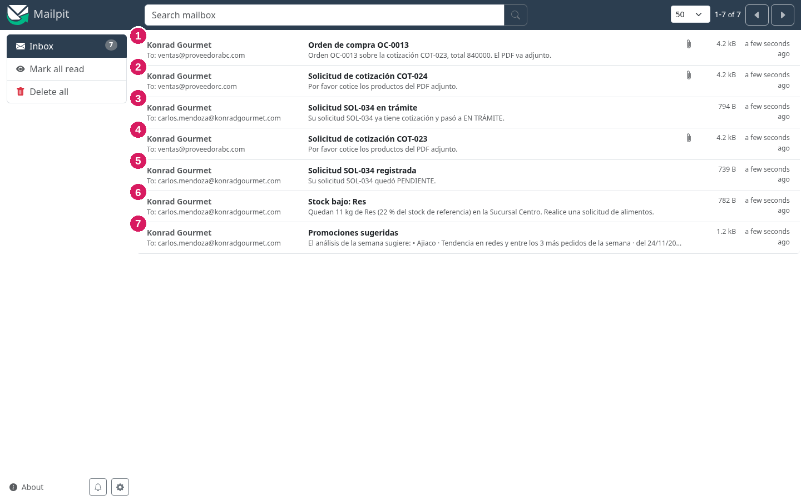
| N.º | Qué hacer o señalar |
|---|---|
| «Orden de compra OC-0013» → ventas@proveedorabc.com · con PDF adjunto. orden.generada: la orden con su PDF, al proveedor | |
| «Solicitud de cotización COT-024» → ventas@proveedorc.com · con PDF adjunto. cotizacion.enviada: la cotización con su PDF, al proveedor | |
| «Solicitud SOL-034 en trámite» → carlos.mendoza@konradgourmet.com. solicitud.en-tramite: aviso al jefe de cocina | |
| «Solicitud de cotización COT-023» → ventas@proveedorabc.com · con PDF adjunto. cotizacion.enviada: la cotización con su PDF, al proveedor | |
| «Solicitud SOL-034 registrada» → carlos.mendoza@konradgourmet.com. solicitud.registrada: confirmación al jefe de cocina | |
| «Stock bajo: Res» → carlos.mendoza@konradgourmet.com. inventario.stock-bajo: la alerta al jefe de cocina | |
| «Promociones sugeridas» → carlos.mendoza@konradgourmet.com. tendencia.detectada: las promociones de la semana (llega al encender la plataforma) |

| N.º | Qué hacer o señalar |
|---|---|
| El asunto, con OC-0013. | |
| El adjunto OC-0013.pdf. |
Debe verse: un correo por cada evento de la historia, del más reciente al más antiguo. En la vista de un correo, la pestaña «Headers» muestra la huella SHA-256 y la estampa cronológica del correo certificado.
Qué arquitectura se ve: Decorator (correo certificado y estampa cronológica)Factory MethodReintentos y cola de errores
🎤 Qué decir
«Cada evento que vimos terminó en un correo. En el equipo los recibe este servidor de correo local, que hace las veces del servidor de correo certificado. El correo se arma con decoradores: el certificado y la estampa de tiempo se suman al envío SMTP sin cambiarlo; en las cabeceras se ve la huella del mensaje.»
«Si el servidor de correo no responde, ms-notificaciones reintenta y, si sigue fallando, el mensaje va a una cola de errores que se vuelve a procesar sola.»
Paso 8 · El tablero BAM
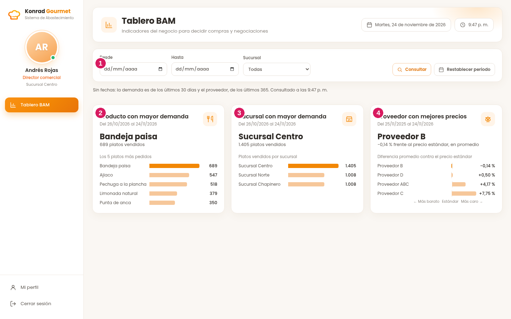
| N.º | Qué hacer o señalar |
|---|---|
| Los filtros: desde, hasta y sucursal (sin filtro: la demanda del último mes y el proveedor del último año). | |
| Producto con mayor demanda. | |
| Sucursal con mayor demanda. | |
| Proveedor con mejores precios. |
Debe verse (con los datos de la demo):
- Producto con mayor demanda: Bandeja paisa 689 platos vendidos
- Sucursal con mayor demanda: Sucursal Centro 1.405 platos vendidos
- Proveedor con mejores precios: Proveedor B −0,14 % frente al precio estándar, en promedio
Qué arquitectura se ve: StrategyEventosAlmacén de hechos propio
🎤 Qué decir
«El director comercial entra directo a su tablero. Los indicadores no consultan las bases de los otros servicios: ms-analitica arma su propio almacén con los eventos que escucha (pedidos, validaciones, solicitudes, órdenes y stock bajo).»
«Cada indicador es una estrategia intercambiable sobre los mismos hechos: agregar uno es agregar una clase.»
Paso 9 · Auditoría, logs y servicios activos
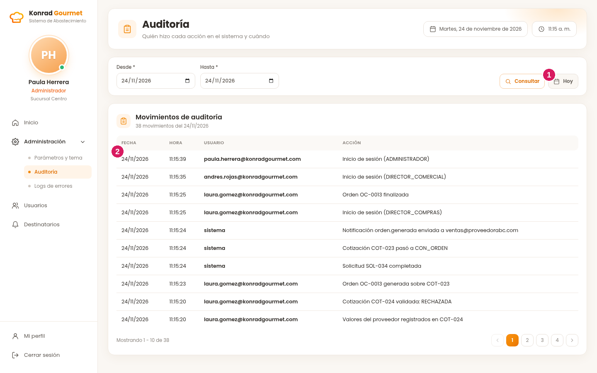
| N.º | Qué hacer o señalar |
|---|---|
| «Hoy». | |
| Lo más reciente primero: quién, qué acción y cuándo. |

En la demo «Logs de errores» sale vacío, y es lo esperado: un error llega aquí cuando algo falla, por ejemplo si el servidor de correo o el Ministerio no responden. Si en el plan B hubo alguno, aparece con su servicio, su mensaje y su hora. Se puede filtrar por servicio.

| N.º | Qué hacer o señalar |
|---|---|
| Los 11 servicios, activos en Eureka, con su prefijo en el gateway. |

| N.º | Qué hacer o señalar |
|---|---|
| Las instancias registradas en Eureka. |
Debe verse: en la auditoría, la historia completa (el pedido, el cierre, SOL-034, las cotizaciones, OC-0013…) con el usuario de cada acción; los 11 servicios activos en http://localhost:8080/plataforma/.
Qué arquitectura se ve: Eventosauditoria.eventoOutbox transaccionalELKService registry (Eureka)Balanceador
🎤 Qué decir
«Por último, la administradora. Cada servicio publica un evento de auditoría en cada operación y ms-administracion los guarda: aquí está la historia que acabamos de hacer, con quién hizo cada cosa. Para que no se pierda ningún evento, cada servicio lo guarda en una tabla outbox en la misma transacción que el cambio y un relé lo publica en Kafka.»
«Los errores de todos los servicios llegan a Elasticsearch y se consultan aquí; hoy no hubo ninguno. Y en esta página se ven los once microservicios registrados en Eureka, que es donde el gateway los busca para enrutar y balancear.»
🎤 Para cerrar la demo
«En resumen: el usuario solo esperó en las acciones donde necesitaba una respuesta, como el número del pedido, de la solicitud o de la orden. Todo lo demás, el inventario, los estados, los correos, los indicadores y la auditoría, ocurrió por eventos, sin que un servicio llamara a otro. Eso es lo que permite escalar cada servicio por separado y que la falla de uno no detenga a los demás.»
6. Si algo falla en vivo
| Qué pasa | Qué hacer y qué decir |
|---|---|
| Un clic responde «Servicio no disponible» (503) al empezar | Eureka todavía no propagó. Esperar un minuto y
repetir; abrir /plataforma/ para ver los 11 activos. «Los servicios se están registrando en Eureka; el
gateway solo enruta a las instancias vivas.» |
| Un servicio no responde a mitad de la demo | COMPOSE_PROJECT_NAME=kg-demo docker compose -f KonradGourmet/plataforma/docker-compose.yml restart ms-…
y esperar un minuto. Aprovecharlo: «los demás servicios siguen funcionando; los eventos que le llegaron esperan en
Kafka y los procesa al volver». |
| La alarma no aparece en vivo | Recargar la página: V05 vuelve a leer las alertas. El correo «Stock bajo: Res» llega igual a Mailpit. |
| «Cierre ejecutado: ningún insumo quedó bajo el 25 %» | La instancia no estaba restablecida (ya se había hecho el cierre). Seguir desde el paso 3 con «Solicitudes» → «Nueva solicitud» y la res a mano, y restablecerla antes de la próxima vez. |
| V14 tarda en marcar «Correo enviado» | Esperar unos segundos: la marca sale cuando ms-notificaciones confirma el envío. Si el correo falla, reintenta solo y luego pasa a la cola de errores. |
| El Ministerio no responde | La cotización queda PENDIENTE DE PRECIO y se guarda sin enviar (ventana «Reenviar una cotización»): mostrarlo como resiliencia y reenviarla desde «Cotizaciones enviadas» cuando vuelva. |
| Se hizo un paso dos veces | No pasa nada: los números siguientes cambian (por ejemplo, SOL-034 pasa a ser el siguiente). Seguir con el número que muestre la pantalla. |
| La plataforma no enciende o el equipo está muy lento | Hacer la demo con las imágenes de la sección 5 de esta guía, en el mismo orden, y decir lo mismo. |
7. Antes de entrar
- El día anterior:
restablecer_demo.sh, encenderkg-demoy comprobar los 11 servicios. Si se ensaya la demo, volver a restablecerla después. - Con tiempo antes de la sustentación (unos 10 minutos): ninguna otra instancia encendida
(
docker ps), encenderkg-demoy esperar ~75 s más. /plataforma/con los 11 «Activo»; la res en 12,5 kg (25 %) en el inventario del jefe.- Pestañas abiertas en este orden, cada una con su sesión (sin «Recordarme»): 1 mesero en la pantalla de
inicio de sesión (el inicio de sesión se muestra en vivo), 2 jefe de cocina en «Inventario», 3 auxiliar
en «Todas las solicitudes», 4 directora en «Inicio», 5 Mailpit, 6 director comercial en el tablero,
7 administradora en «Auditoría», 8
/plataforma/. - Zoom del navegador al 100 % o 110 %, pantalla completa, notificaciones del sistema silenciadas, equipo conectado a la corriente.
- Esta guía abierta en otro dispositivo o en otra ventana, por si hay que pasar al plan B.
- Al terminar, apagar
kg-democonstop.
8. Preguntas probables
- ¿Esto corre en la nube?
- No: es la misma arquitectura en un equipo con Docker Compose, un contenedor por pieza del diagrama de contenedores. En producción cambia el despliegue (página 5: réplicas, balanceador, centro alterno), no el código.
- ¿Qué pasa si se cae un microservicio?
- Los demás siguen. Lo que le llegue por Kafka espera en el tópico y lo procesa al volver; si alguien llama a su ruta, el gateway responde que no está disponible. En producción hay 2 a 4 réplicas por servicio.
- ¿Cómo se asegura que un evento no se pierda ni se procese dos veces?
- Outbox: el evento se guarda en la misma transacción que el cambio y un relé lo publica en Kafka. Y cada consumidor guarda el identificador de los eventos que ya procesó y descarta los repetidos.
- ¿Por qué la alarma llega en vivo si hay varias réplicas de notificaciones?
- La réplica que recibe el evento lo publica en un canal de Redis y cada réplica se lo entrega a los jefes que tiene conectados por WebSocket (PD-01).
- ¿De dónde sale el precio del Ministerio?
- De un servicio web SOAP del Ministerio de Comercio, que solo consulta ms-integracion; el precio queda en caché en Redis. En el equipo, ese servicio lo atiende un servidor local que responde como el del Ministerio (guía de lo externo).
- ¿Los correos salen de verdad?
- Salen por SMTP a un servidor de correo local que los guarda para verlos, con sus adjuntos y cabeceras; en producción se cambia la dirección del servidor de correo certificado, no el código.
- ¿Por qué «Cierre del día» es un botón?
- Para no esperar a las 23:59: ejecuta la misma tarea programada que corre cada noche, con ShedLock para que la haga una sola réplica.
- ¿Cómo se sabe quién hizo cada cosa?
- El usuario sale del JWT y viaja en cada evento; la auditoría lo muestra con la fecha y la acción, y cada historia comparte un identificador de correlación.
- ¿Cómo se probó?
probar_todo.shcorre sobre una instalación limpia 1.254 comprobaciones sin fallas: 400 del núcleo, 91 pruebas JUnit y 763 de recorridos en el navegador y verificadores, uno de ellos esta misma historia de punta a punta.- ¿Funciona en el celular?
- Sí, las 33 ventanas son responsive (sección 4, al final).
Konrad Gourmet · Sistema de Abastecimiento · Arquitectura de Software, Fundación Universitaria Konrad Lorenz, 2026-2